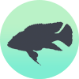

Cichlids
A GUIDE TO CARING FOR CICHLIDS
Cichlids are one of the other very popular types of
aquarium fish. Because of their distinct colours and
aggressive nature they appeal to a wide range of
aquarists. They originate from south America, in areas
with a solid rock base such as limestone within a
fresh water lake.
The most well-known is
probably lake Malawi, one of the largest freshwater
lakes in existence. Due to rocks such as limestone bordering the lake, it has caused
there to be a very high pH and hardness within the water system.
Due to a different type of water they are usually unable to be put with other
community fish unless they share the same water parameters. There are two major
types of cichlids, African and American, it is uncommon to house both species as
they appear to be more aggressive toward each other, it is better to choose one of
the two.

Temperature ~75°F
- The optimum aquarium temperature for Cichlids is around
72°F - 82°F (22°C-28°C). Higher temperatures will require less aquarium stocking.

pH ~8.1 | Hardness 12.0
- Keep your pH between about 7.8 and 8.5. This is achieved through the use of white
limestone rocks or crushed coral substrate.
- Relative water hardness should be 10-15dH. This will replicate hard
limestone conditions similar to Malawi Lake in Africa.

Max Size ~6+"
- While most cichlids will grow fairly large to around 6" in length,
some are capable of growing to 12"+ in the right conditions. Keep this
in mind when stocking the aquarium.

Nitrite 0ppm
- Nitrite should always be 0.

Ammonia 0ppm
- Cichlids are sensitive to ammonia spikes. Theu will breathe rapidly and noticebly
less active.

Nitrate >40ppm
- Nitrates should always be as close to 0ppm as possible. Because of elevated
pH and hardness, few aquarium plants do not thrive in cichlid tanks. Water changes
are the best way to keep nitrates under control.

Choosing Species
- Although they can be quite aggressive,
if you choose the same typed cichlids they will co-exist very well. Just
make sure that you have the right sized tank, some cichlids will grow incredibly
large but quite slowly, make sure you are able to accommodate them over time.

Environment
- Cichlids should be avoided with planted tanks as they
are avid diggers and will constantly rescape the gravel in your aquarium. They may
also eat and deroot the plants. But this is no big issue as the plants do not enjoy
the high pH and in their natural environment it is void of most plant life.

Feeding
- They can be fed most foods and they enjoy the occasional live snack, like discus
sinking pellets are the best option as flakes are too thin for these larger fish.
Frozen brine and daphnia are also great options
and will diversify their meals.

Breeding
- In the right conditions and if you have a male and female they will probably breed, it is best to have a trio for the best chance. They will lay eggs and look after them carefully. Most are mouth-brooders making sure that the fry never leave their sight this will lead to a high chance of success when raising the young.